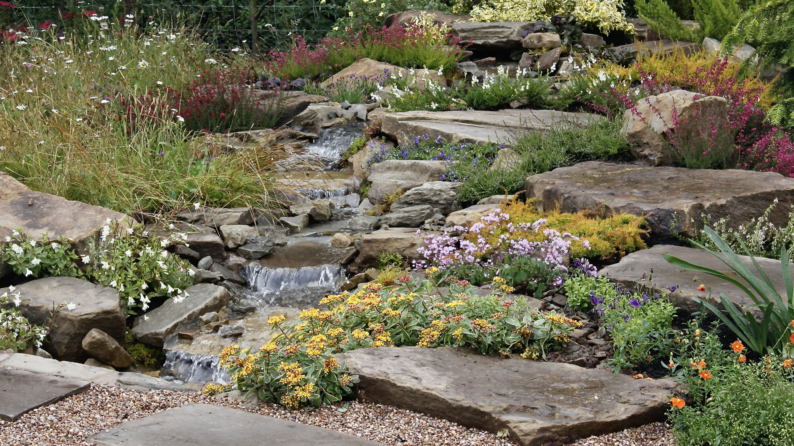
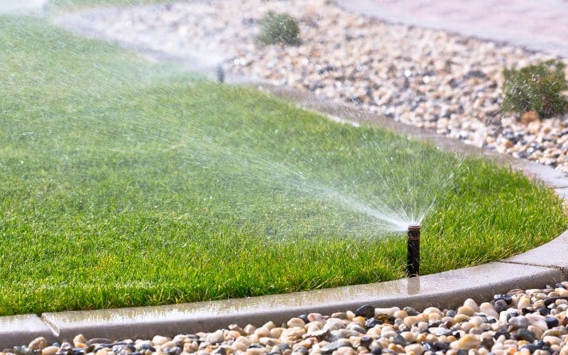
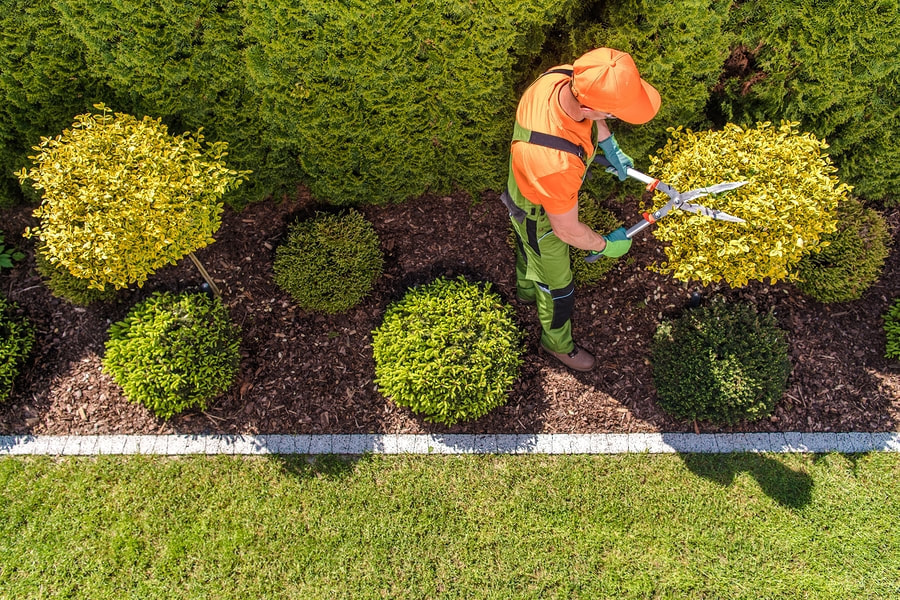
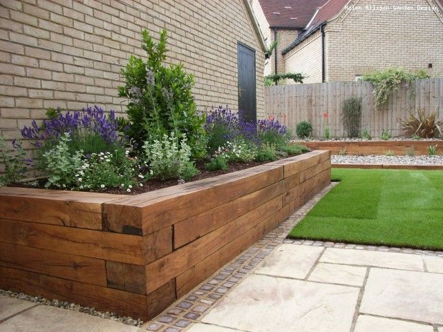

Jardins Verticais
Sistemas modulares de paredes verdes que transformam qualquer espaço interior ou exterior num oásis vertical.
Mais PopularCriamos espaços verdes exclusivos que refletem o seu estilo de vida. Desde jardins verticais modernos a terrários artísticos, trazemos a natureza para mais perto de si.
Cada projeto é pensado à medida, criando soluções únicas que se adaptam ao seu espaço e personalidade.
Trabalhamos com espécies raras e plantas de excelência, garantindo durabilidade e beleza.
Equipa especializada com anos de experiência em paisagismo de alta qualidade.
Soluções integradas de paisagismo para espaços residenciais e comerciais.
Sistemas modulares de paredes verdes que transformam qualquer espaço interior ou exterior num oásis vertical.
Mais Popular
Criações artísticas em vidro com musgos, suculentas e plantas exóticas. Decoração única para escritórios e lares.

Instalação de rega automática e inteligente que otimiza o consumo de água enquanto mantém o verde exuberante.

Instalação e manutenção de relvados de сем Sleeper e zonas ajardinadas de baixa manutenção.

Poda artística e topiaria para criar formas escultóricas que elevam o design do seu jardim.

Projeto de iluminação cénica e elementos decorativos que destacam a beleza do seu espaço verde à noite.
Alguns dos projetos que realizzámos com dedicação e excelência.
"O jardim vertical que criaram no nosso escritório mudou completamente o ambiente de trabalho. Todos os colegas adoram e o produtividade aumentou!"
"Serviço impeccável. O террарио que encomendei é uma obra de arte. Recomendo a qualquer pessoa que procure excelência."

"Equipa muito profissional e criativa. Transformaram o nosso pátio num espaços muito agradável. O orçamento foi rápido e transparente."
O tempo varia conforme a complexidade. Um jardín simples pode estar pronto em 2-3 dias, enquanto projetos mais elaborados podem necessitar de 2-4 semanas. Fornecemos um cronograma detalhado após a visita técnica.
Aceitamos transferência bancária, MB Way e pagamento em prestações para projetos de maior valor. O pagamento pode ser dividido em fases: 50% no início e 50% na conclusão.
Sim! Oferecemos contratos de manutenção adaptados às necessidades do seu espaço verde, incluindoadubação, poda, controlo de pragas e substituição de plantas.
Estamos sediados na Grande Lisboa e atuamos em todo o território nacional, com logística própria para projetos de maior dimensão fora da capital.
Estamos prontos para transformar o seu espaço. Conte-nos a sua visão e juntos criaremos algo extraordinário.